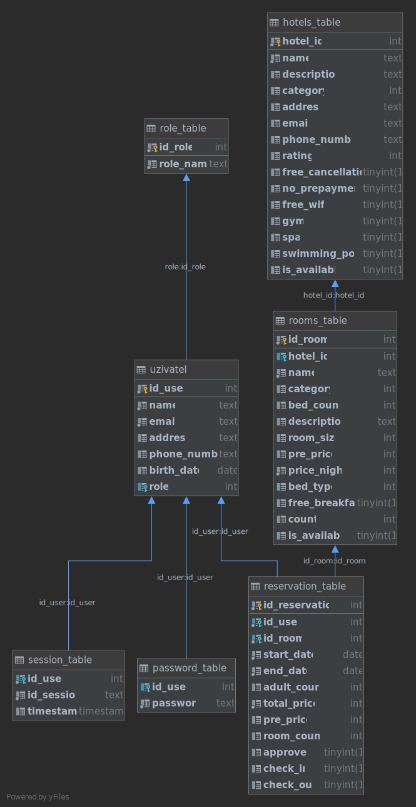

2. Hotel: rezervace a správa ubytování
- Autoøi
- Martin Haderka
xhader00@stud.fit.vutbr.cz -
- Zaji¹tìní hostinu a doménového jména.
- Návrh a testování UI.
- Spolupráce na Flask controlleru.
- Vytvoøení front-end èásti (ReactJS aplikace).
- Richard Klem
xklemr00@stud.fit.vutbr.cz -
- Vytvoøení MySQL databáze a testovacích dat
- Spolupráce na Flask controlleru
- Testování controlleru
- Testování front-end èásti
- URL aplikace
- http://iis-projekt.ddns.net/
- http://93.153.43.141/
U¾ivatelé systému pro testování
| Login | Heslo | Role |
|---|
| admin@iis-hotel.cz | 1234 | administrátor |
| vlastnik@iis-hotel.cz | 1234 | vlastník |
| recepcni@iis-hotel.cz | 1234 | recepèní |
| martin@email.cz | 1234 | zákazník |
| john.appleseed@apple.com | 1234 | zákazník |
Implementace
Struèná dokumentace k implementaci, která popisuje, které èásti projektu (napø. PHP skripty) implementují jednotlivé pøípady pou¾ití.
Flask framework - controller
__init__.py
Soubor s konstantami pøístupových údajù a adresou databáze.
databaseConnector.py
Modul zaji¹»ující pøipojení a zasílání pøíkazù do databáze.
iisUtils.py
Modul s podpùrnými funkcemi pro práci s hlavním modulem.
Zaji¹»uje následující funkcionalitu:
- zahashování pøijatého hesla funkcí #hash_password,
- zkontrolování hesla pomocí pomocí #verify_password,
- vygenerování náhodného identifikátoru pro pøihlá¹eného u¾ivatele #random_uuid,
- ukládání vlo¾ených obrázkù #save_image,
- zpracování nevhodných vstupù #serializa_string,
- èasto pou¾ívané po¾adavky zasílané databázi.
api.py
Hlavní modul, který zpracovává pøíchozí GET/POST po¾adavky.
Výpis hlavních funkcí:
- funkce pro pøidání nového zákazníka#registration
- funkce pro ovìøení hesla zákazníka, který se pøihla¹uje#login
- funkce pro získání a úpravu dat z DB o úètu pøihlá¹eného zákazníka#account, #get_user_name, #get_role, a #update_account
- funkce pro administrátora pro správu u¾ivatelù#get_users, #update_user_request a #remove_user
- funkce pro správu obrázkù#upload_user_image, #get_profile_image, #upload_hotel_image, #get_hotel_image, #upload_room_image a #get_room_image
- funkce zaji¹»ující zobrazení nabídky a správu hotelù#get_available_hotels, #get_hotels_admin, #get_hotels, #remove_hotel, #is_hotel_reserved, #edit_hotel a #edit_hotel
- funkce zaji¹»ující zobrazení nabídky a správu pokojù#get_room_by_hotel_id, #is_room_reserved, #get_room_by_hotel_id_admin, #get_room, #remove_room, #add_room a #edit_room
Databáze

Instalace
Otevøete si dva terminály. V prvním pobì¾í Flask server, v druhém React aplikace.
Pøíkazy pro nastartování Flask serveru v prvním terminálu:
cd backendpython3 -m pip install -r requirements.txtflask run
Pøíkazy pro nastartování React aplikace v druhém terminálu:
cd frontendnpm inpm start
- postup instalace na server,
- softwarové po¾adavky (verze PHP apod.),
- jak rozbalit, konfigurovat, inicializovat databázi, ...
Známé problémy
Zde popi¹te, které body zadání nejsou implementovány a z jakého dùvodu. Napø. „Z èasových dùvodù nebyla implementována správa u¾ivatelù.” Pomù¾ete tím zrychlit hodnocení, kdy¾ neimplementované funkce nebudeme muset dlouze hledat.